Abstract
Object-centric learning aims to decompose the visual data into a
set of individual entities, in contrast to traditional deep
learning models that represent a scene with global features.
Leveraging advanced architectures such as Transformers,
slot-based methods have made great progress in unsupervised
object discovery. However, recent slot models still exhibit poor
performance in generative modeling, producing blurry images with
distorted objects. In this paper, we thus focus on this issue
that have previously received little attention: the
slot-to-image reconstruction quality, which is important for
generation tasks. We propose SlotDiffusion -- a slot-conditioned
Latent Diffusion Model (LDM) operating on both image and video
data. Thanks to the strong modeling capacity of LDMs,
SlotDiffusion achieves state-of-the-art results in both
unsupervised object segmentation and visual generation quality
across six datasets compared to previous slot models. Moreover,
SlotDiffusion can be combined with existing object-centric
dynamics models, improving the performance of video prediction
and Visual Question Answering (VQA). Finally, we show that
SlotDiffusion scales to unconstrained real-world datasets such
as PASCAL VOC and COCO, when integrated with pre-trained
encoders such as DINO ViT.
Overview of a general object-centric learning framework on
videos (a). The model performs Slot Attention to capture objects
with slots, and decodes slots back to images for the
reconstruction loss. Previous methods have explored two types of
slot decoders: mixture-based (b) and Transformer-based (c).
However, models with mixture-based decoders [1, 2] cannot
segment objects from complex videos, while models with
Transformer-based decoders [3, 4] generate distorted images
from slots, and thus are not suitable for object-centric
generative models (e.g. video prediction [7]).
In this paper, we instead propose a Latent Diffusion Model (LDM)
[6] based slot decoder. Given an image $x$, we first leverage a
pre-trained VQ-VAE encoder to tokenize it as $z$, and add random
Gaussian noise on it as $z_t$. Then, a U-Net is trained to
predict the noise $\epsilon_t$ conditioned on slots
$\mathcal{S}$. The slot conditioning is achieved via
cross-attention.
Thanks to the strong modeling capacity of diffusion models,
our method, SlotDiffusion, achieves state-of-the-art results
in both unsupervised object segmentation and generative
modeling.
Qualitative Results
We mainly compare with four baselines: SA (mixture) and SLATE
(Transformer) on images, SAVi (mixture) and STEVE (Transformer)
on videos. We keep all model components the same, and only
replace our slot decoder with an LDM.
Object Segmentation
We show unsupervised scene decomposition results on MOVi videos.
SAVi degenerates to trivial stripe patterns. Compared to STEVE,
SlotDiffusion achieve better slot tracking and less
object-sharing issue, especially on large objects.
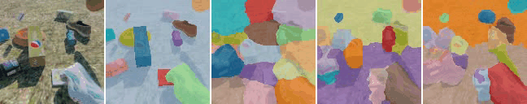
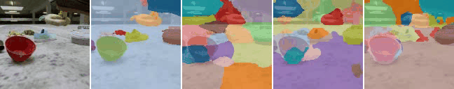
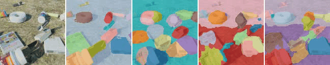
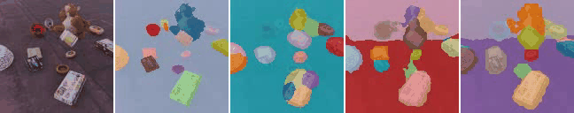
Generative Modeling
Object-centric generative models enjoy several advantages, e.g.
explicit modeling of object interactions, interpretable image
editing. Their generation process often consist of two steps: i)
predicting slots in the latent space; ii) decoding slots back to
the pixel space. Therefore, their generation quality is bounded
by the slot-to-image decoding quality.
Reconstruction
We first show some image (CLEVRTex & CelebA) and video (MOVi)
reconstruction results. SlotDiffusion preserves local details
much better, such as the textures on objects and backgrounds,
and the human hairs and facial features.
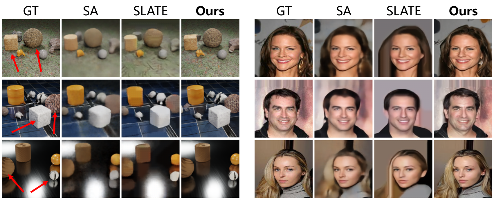
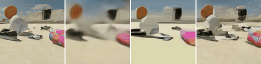
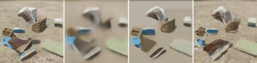
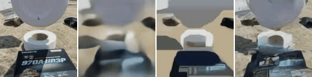
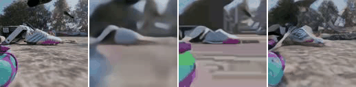
Compositional Generation
We then show results on compositional generation. We treat
object slots as basic visual concepts, similar
to phrases in a sentence. As shown below, SlotDiffusion
discovers objects with different shapes on CLEVRTex, and
decompose CelebA images to clothes, hairs, faces and
backgrounds.
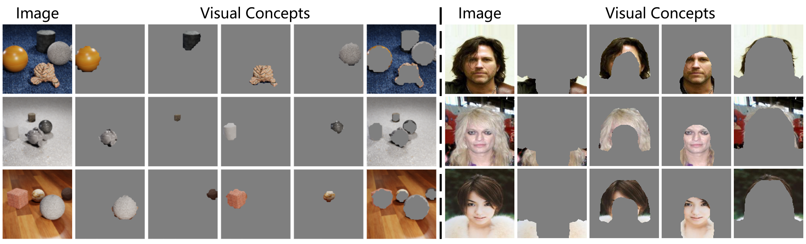
After building a visual concept library (see paper Section 3.3),
we are able to generate novel samples by randomly composing
different concept slots.
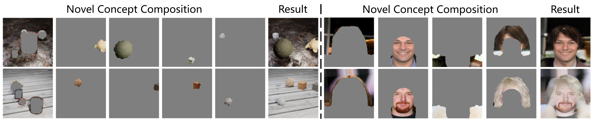
We show more results below. Compared to baselines, SlotDiffusion
generates results closer to the original datasets.
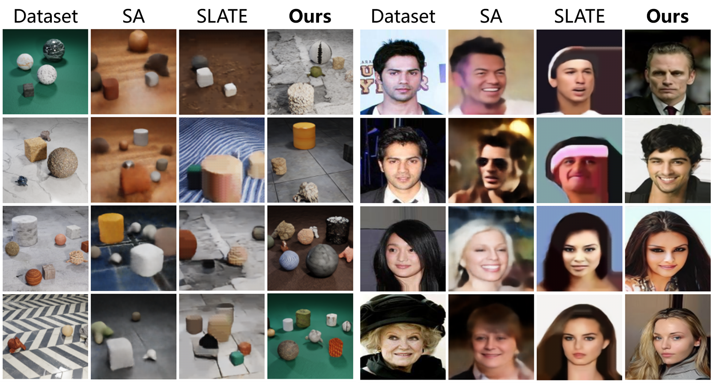
Image Editing
Finally, we show that SlotDiffusion can edit images by
manipulating object slots. For example, we can replace the human
faces by swapping the corresponding slots, while keeping the
clothes, hairs and backgrounds unchanged.
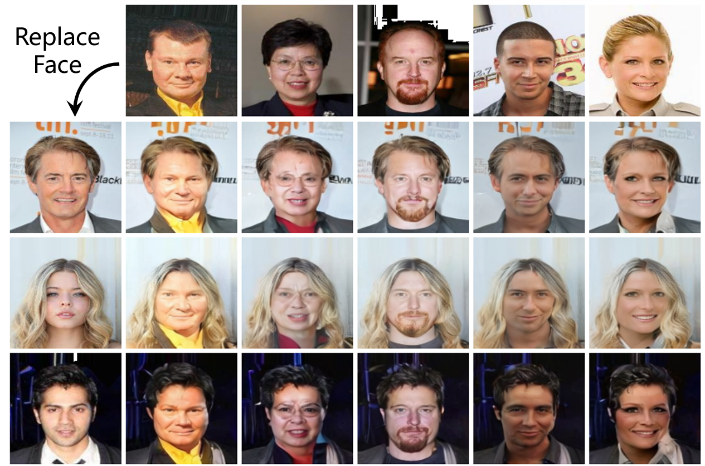
We can also remove/segment objects from a scene, insert a new
object from another scene, get its background image and swap it
with a novel background image from another scene.
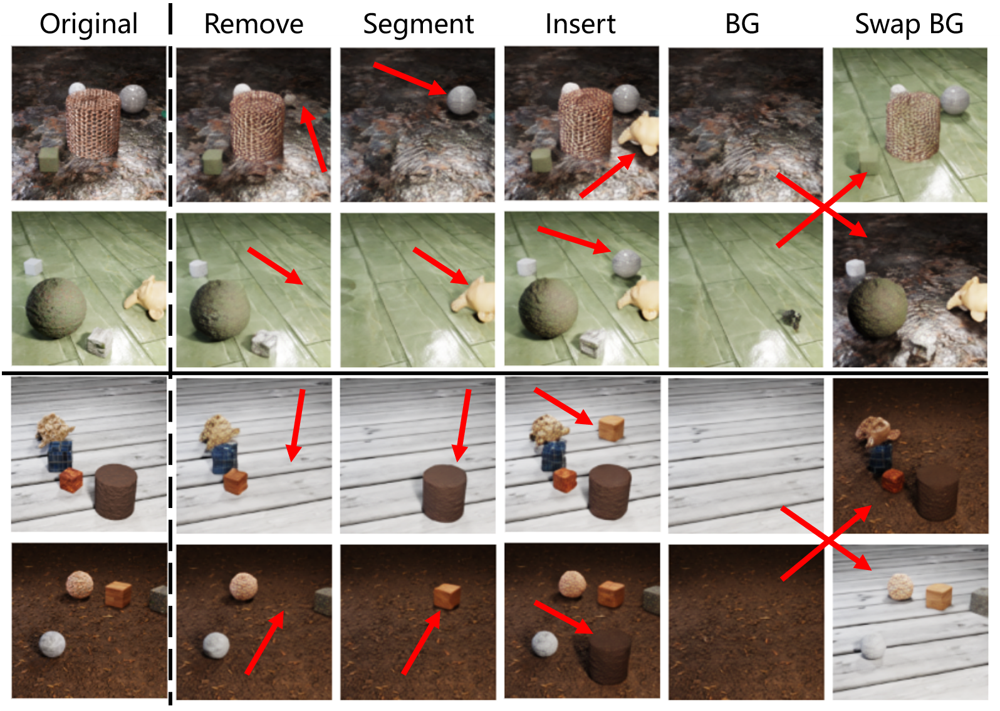
Video Prediction
We now show how SlotDiffusion's better slot decoder can help
downstream video prediction and VQA tasks. We train an
object-centric dynamics model SlotFormer (SF for short) [7] over
learned slots, and perform future rollout. Then, we reason the
predicted future to answer questions. Our method simulates both
correct object dynamics and better visual quality. We also
achieve SOTA VQA results on Physion (see paper Section 4.4).
| Video |
PredRNN |
VQFormer |
STEVE + SF |
Ours + SF |

Scale Up to Real-World Data
Finally, we show that SlotDiffusion can scale up to real-world
datasets MS COCO and PASCAL VOC with the help of DINO [14]
pre-trained image encoders. Our method not only segments major
objects, but also discovers unannotated yet semantically
meaningful regions, such as trees and keyboards.
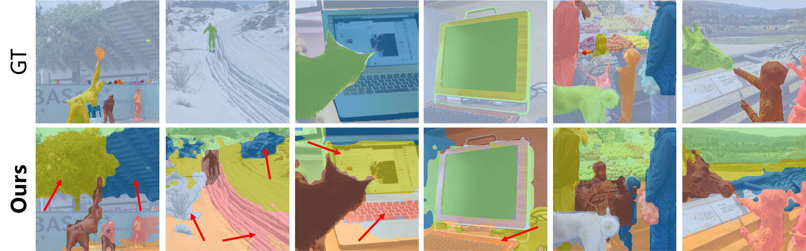
References
[1] Locatello, Francesco, et al. "Object-Centric Learning with
Slot Attention." NeurIPS. 2020.
[2] Kipf, Thomas, et al. "Conditional Object-Centric Learning
from Video." ICLR. 2021.
[3] Singh, Gautam, et al. "Illiterate DALL-E Learns to Compose."
ICLR. 2022.
[4] Singh, Gautam, et al. "Simple Unsupervised Object-Centric
Learning for Complex and Naturalistic Videos." NeurIPS. 2022.
[5] Ho, Jonathan, et al. "Denoising Diffusion Probabilistic
Models." ICML. 2020.
[6] Rombach, Robin, et al. "High-Resolution Image Synthesis with
Latent Diffusion Models." CVPR. 2022.
[7] Wu, Ziyi, et al. "SlotFormer: Unsupervised Visual Dynamics
Simulation with Object-Centric Models." ICLR. 2023.
[8] Bear, Daniel, et al. "Physion: Evaluating Physical
Prediction from Vision in Humans and Machines." NeurIPS Datasets
and Benchmarks Track. 2021.
[9] Wang, Yunbo, et al. "PredRNN: Recurrent Neural Networks for
Predictive Learning using Spatiotemporal LSTMs." NeurIPS. 2017.
[10] Karazija, Laurynas, et al. "CLEVRTex: A Texture-Rich
Benchmark for Unsupervised Multi-Object Segmentation." NeurIPS
Datasets and Benchmarks Track. 2021.
[11] Liu, Ziwei, et al. "Large-Scale Celeb Faces Attributes
(CelebA) Dataset." 2018.
[12] Everingham, Mark, et al. "The Pascal Visual Object Classes
(VOC) Challenge." IJCV. 2010.
[13] Lin, Tsung-Yi, et al. "Microsoft COCO: Common Objects in
Context." ECCV. 2014.
[14] Caron, Mathilde, et al. "Emerging Properties in
Self-Supervised Vision Transformers." ICCV. 2021.
[15] Seitzer, Maximilian, et al. "Bridging the Gap to Real-World
Object-Centric Learning." ICLR. 2023.